Թեստ 1
30:00
1. «Ճանապարհային երթևեկության անվտանգության ապահովման մասին» ՀՀ օրենքի համաձայն ուղևոր է համարվում`
2. Ո՞ր նկարում ճանապարհը բաժանարար գոտի ունի
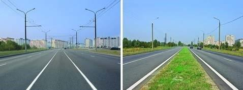
3. Տրանսպորտային միջոցների շահագործումն արգելվում է, եթե`
4. Տրանսպորտային միջոցների շահագործումն արգելվում է, եթե
5. Նշաններից ո՞րն է կոչվում «Արգելքի շրջանցումը ձախից»:
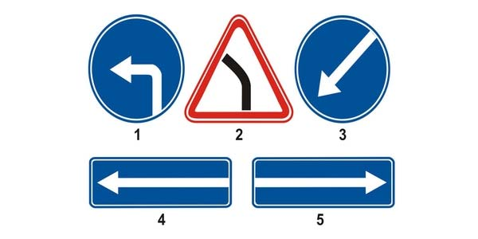
6. Եթե մտադիր եք կատարել աջ շրջադարձ, ո՞ր տրանսպորտային միջոցին պետք է զիջեք ճանապարհը:
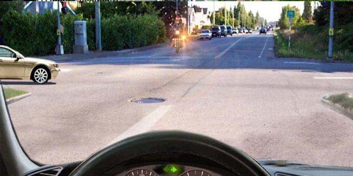
7. Ո՞ր ճանապարհային նշանն է արգելում հետադարձը:
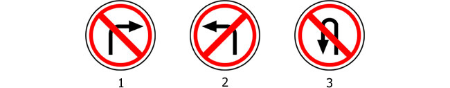
8. Տրանսպորտային միջոցները խաչմերուկը կանցնեն հետևյալ հերթականությամբ`
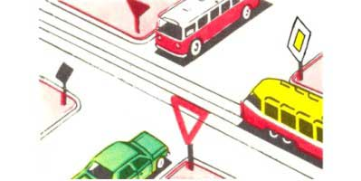
9. Խաչմերուկն առաջինը կանցնի`
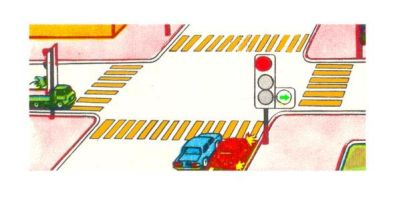
10. Թույլատրվու՞մ է արդյոք կարմիր ավտոմոբիլի վարորդին վազանց կատարել տվյալ իրադրությունում:
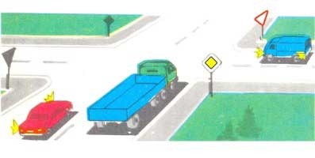
11. Այս իրավիճակում
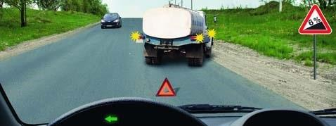
12. Եթե երկաթուղային գծանցով երթևեկությունը արգելված է և բացակայում է լուսացույցը, ճանապարհային նշանները, գծանշումն ու ուղեփակոցը, ապա վարորդը պետք է կանգնի`
13. Կոշտ կամ ճկուն կցիչով քարշակման ժամանակ թույլատրվու՞մ է արդյոք մարդկանց փոխադրումը քարշակվող ավտոբուսում։
14. Ո՞ր հետագծով է թույլատրված ձախ շրջադարձը
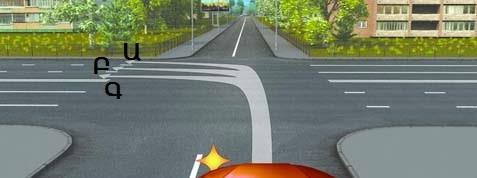
15. Նշված գոտուց ո՞ր ուղղություններով է թույլատրված երթևեկությունը
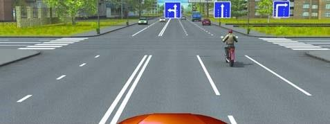
16. Ո՞ւմ եք պարտավոր զիջել ճանապարհը տվյալ իրավիճակում
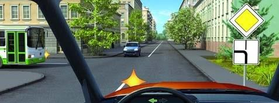
17. Զիջել ճանապարհը տրամվայի վարորդին
18. Նշվածներից, ո՞ր վայրում է թույլատրվում կանգառ կատարել
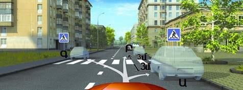
19. Ո՞ր կողմից կարելի է շրջանցել արգելքը
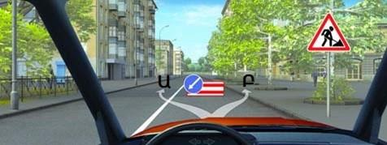